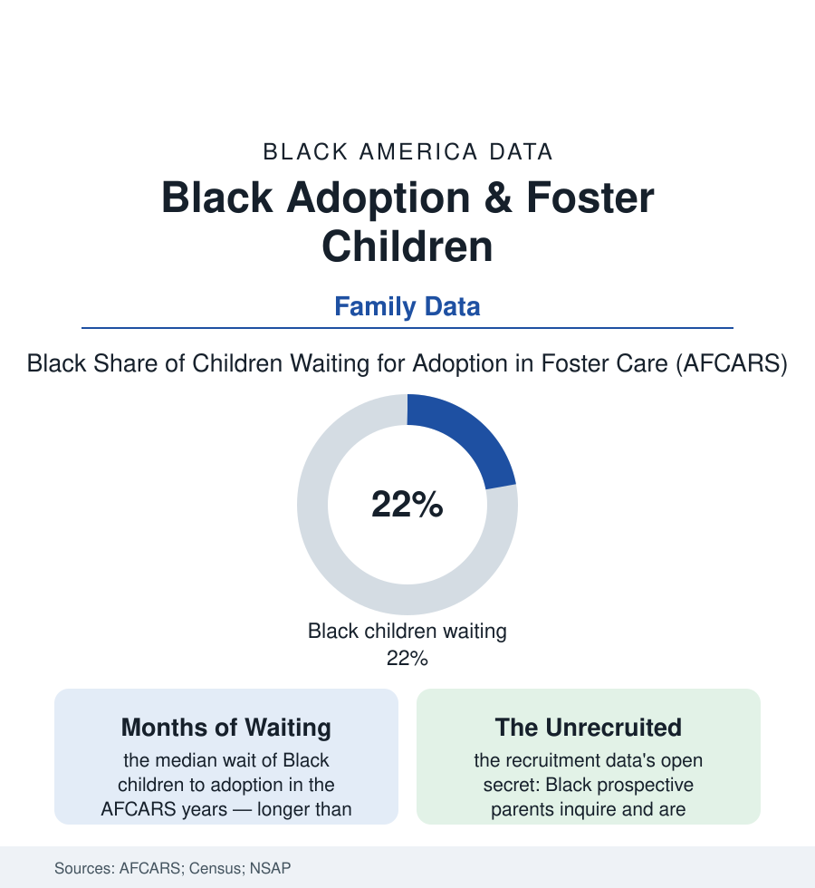

Black Census
The Adoption File: Waiting Children, Willing Families, and a System Between Them
Black children wait longest for adoption in the federal foster-care data — while Black families adopt at strong rates and are recruited least. The adoption file.

About a hundred thousand American children in foster care are waiting, in the federal count, for adoption — legally free, parentless on paper, in temporary homes. Roughly a fifth to a quarter of them are Black, against fourteen percent of the child population, and they wait longer than the others in the AFCARS data: longer to be matched, longer to be adopted, likelier to age out of the system into the young-adult files of this atlas with no legal family at all. This article reads the adoption file.
Why the Wait Runs Long
The waiting child's profile in the data is specific: older (the median waiting child is school-age, the teenagers waiting longest), in sibling groups, with the documented needs the special-needs file describes — and Black, each of those characteristics compounding the others in the matching statistics. The system's side of the ledger has its own documented arithmetic: the recruitment research (the federal diligent-recruitment grants' evaluations) finding agencies' outreach historically concentrated where it had always looked — the white suburbs — while their own inquiry data showed Black families responding to adoption information at rates equal or better wherever the information genuinely arrived (the church-based recruitment programs of the faith file posting the inquiry-to-approval numbers that embarrass the standard marketing, the Black social workers' associations having argued for fifty years that the children and the families were in the same neighborhoods and the agency's map was the obstacle). The placement data carry the controversies the file must record factually: the transracial placements the federal law of the 1990s made formally race-neutral in the matching rules (the Multiethnic Placement Act's bar on delay by race), the Black social-work profession's counter-argument of the same era (children's cultural needs as a placement factor, not a preference), and the outcome research's long attempt to settle the argument with follow-ups — its broad finding (adopted children across placements doing far better than waited children on every adult measure the studies can reach) standing in the record beside the waiting numbers themselves, which constitute the system's own verdict on delay.
The Families the Data Find
The adoptive-parent data complicate every easy assumption the file began with: Black adoptive parents are present in the National Survey of Adoptive Parents at shares near their population share — adopting, disproportionately, from foster care rather than privately or internationally, adopting older children and sibling groups at higher rates, adopting as single parents and as kin at the rates the kinship file predicts, and reporting, in the survey's satisfaction rows, outcomes indistinguishable from every other group. The kinship adoption channel is the system's quiet workhorse in the Black data (the grandmother of the grandparents file converting her guardianship to an adoption, the subsidized-guardianship programs of the recent policy decades formalizing the family's own arrangements with a fraction of foster care's cost and none of its churn — the exit-to-kin rows in the AFCARS outcomes among the most stable the system records). And the aging-out file closes the data with its warning: the young people who leave care at eighteen or nineteen without adoption or reunification — roughly twenty thousand a year nationally, Black youth overrepresented — arrive in the employment, housing, and college files of this atlas carrying the documented penalties of the family-less transition (the longitudinal follow-ups' earnings, education, and homelessness rows), the measurable lifetime price of the wait that the first section counted in months. The adoption system's numbers, read whole, describe not a shortage of love or of families but a matching failure with addresses on both sides — children in one set of neighborhoods, willing parents in the same ones, and an institution between them learning, grant cycle by grant cycle, to look where they both live.
Reading the Adoption Data
Adoption is the state acting as matchmaker for its wards, and its federal report card is public: a fifth to a quarter of the waiting children Black, waiting longest, in the one file where waiting is the injury itself. The AFCARS tables publish the months. Every month a waited child could annotate — but the waited children, by the design of childhood, are the one constituency in this atlas who cannot testify on schedule.
More in Black Census
The Black Population of the United States: Size, Definitions, and Distribution
The Black population of the United States totals 52.8 million — 15.4 percent of the nation. How the Census Bureau defines and counts the population, and where it lives.
Black Median Household Income in the United States
Black median household income stands at $56,490 in the Census Bureau's annual income report — how the figure is measured, how it compares, and what drives it.
The Black Poverty Rate: Levels, Children, and the Long Trend
The official Black poverty rate is 17.1 percent — against 11.1 percent nationally and 7.7 percent for non-Hispanic White Americans. How poverty is measured and what the data show.
Source: U.S. Department of Health and Human Services AFCARS reports; U.S. Census Bureau; National Survey of Adoptive Parents; Dave Thomas Foundation adoption research.